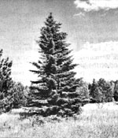
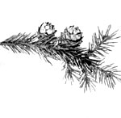

Try your hand at making this truly natural, sugarless treat!
Ninety years ago, a person could walk into almost any general store in America, plop down a penny or two, and pick up a trim little package of spruce chewing gum. There was even a choice of brands, such as Kennebec, Yankee, 200Lump, and American Flag . . . to name just a few. People were accustomed to the spruce gum's unsweetened, woodsy taste, and their demand for it supported a thriving industry boasting nationwide distribution.
But then came the "modern" chews-which were softer, sweeter, and less expensive to manufacture-and they soon took over the market. By 1910 the spruce gum industry had been reduced to little more than a few "kitchen stove" operations with very small outputs and only scattered distribution . . . and so it remains to this day.
The limited availability of the prepared product need not stand in the way, however, of your spruce gum enjoyment, since it's actually quite easy to make your own! Moreover, the black spruce tree (Picea mariana), the source of raw spruce gum, has a large enough range to make it available to most Americans . . . who'll either live within the tree's native area or encounter the evergreen while on their travels.
You'll find this conifer in Alaska, much of Canada, New England, central Pennsylvania, western New York, the coast of New Jersey, western Maryland, central Wisconsin, northeast Minnesota, the south peninsula of Michigan, and-sporadically-along the Appalachians as far south as North Carolina.
For the details about more specific locations, write to the Forestry Department's Information and Education Division in the capital city of the state you're interested in. The directions you'll receive in response to your query, combined with a good field guide to trees, should be all you'll need to put yourself right in the middle of a stand of spruce!
To collect the raw gum, examine the trunk of a black spruce for breaks or scars in the bark. That's where the pitch oozes out and-over a long period of time-solidifies into the hard chunks of resin you're after!
Natural causes for bark ruptures and scars include fire, lightning, frost, wind, and wildlife damage. Man-made marks can result from tree-harvesting activities, snowplow injuries, and "recreational" damage caused by the traffic around camping facilities and boat launching ramps.
Even though nineteenth-century lore insists that amber-colored raw gum is the best, I make no such distinction. Instead, I scrape off all the solid resin (the soft kind is unacceptable) that I can reach with my putty knife-whether it's yellow, brown, cream, or pink-since it all looks the same after processing.
In the course of a typical two-hour outing, I can usually collect over one pound of the raw gum. This yields enough of the finished chewy treat to last me well over a year!
The processing of your raw spruce product (which is done in two stages) will accomplish only one thing: It cleans the raw gum of bits of wood, bark, dirt, and other impurities.
First of all, dump your foraged forest product onto a large square of cloth spread out on any hard, flat surface. Then, using a mallet, smash the resin repeatedly until it's reduced to a sandlike consistency. Hard raw gum will pulverize easily . . . but bits of wood or bark won't, so these impurities can be easily spotted and removed by hand.
During the second step, you'll melt and strain the material, but-before doing so-you must prepare a cooling pan for later use. I find that a 2"-deep, 5" X 7" bread pan is ideal, although any shallow metal container will do. I simply tape one end of a long, 7"-wide strip of cheesecloth or cotton muslin to the pan's outside bottom ... wrap the cloth up and around the container four or five times, making sure most of the pan's opening is covered on each pass . . . and then securely tape down the other end of the strip. Later, when the melted gum is poured into the container, the cloth acts as a strainer.
With the cooling pan ready, you can melt the gum. You'll need a small pot . . . preferably one you can spare, since it will be somewhat difficult to clean after the operation. Put in an inch of the pulverized spruce drippings . . . add enough fresh water to make a soupy mix . . . then set the utensil on a slow fire. As the water comes to a boil, the gum will begin to melt and float on top. When continued heating has liquefied all the resin particles, remove the pot and quickly pour its contents into the cooling pan.
Melted spruce gum is a very sticky substance, so expect to lose up to 25% of what you started out with. Some will adhere to the cloth strainer, and-since it contains impurities-must be thrown out with the cloth. Even more will stick to the inside of the pot . . . but this can be left, as it will remelt and become part of the next batch you process.
After the spruce soup cools and solidifies (it'll take about 30 minutes), remove the cloth and pour off the water. You'll find a sheet of gum on the pan's bottom. A sharp rap with any blunt instrument will crack this out. Then, to finish the job, simply break up the resulting large chunks into bite-sized pieces . . . dust them with cornstarch to keep them from sticking together . . . and store the natural confection in a cool, dry place.
If you've never chewed spruce gum before, be patient. It's very brittle and-at the first bite-will crumble. Therefore, you must hold it in your mouth for 30 seconds or so and keep masticating. Soon, it will soften into a nice, pink gum that's as chewable as any on the market today.
And the taste? Here again, the novice must be patient. Remember, the resin is unsweetened and comes straight from the tree, so it might seem a little harsh at first. If, however, you think pleasant thoughts of forest sights, sounds, and smells while you chew, you'll soon discover the subtle charm of this natural treat. And once you become accustomed to the "sprucy" taste, no store-bought gum will do!
EDITOR'S NOTE: If you need a good guidebook to aid you in your spruce-hunting endeavors, you'd be hard-pressed to find a better volume than, The Audubon Society Field Guide To North American Trees (Eastern Region). It's available at most good bookstores and many libraries, or-for $9.95 plus 95 cents shipping and handling from-Mother's Bookshelf, P. O. Box 70, Hendersonville, North Carolina 28791.
|
 The stately black spruce? is easily identified by both its ashy, blue-green needles and its small egg- shaped cones. |
 |
|